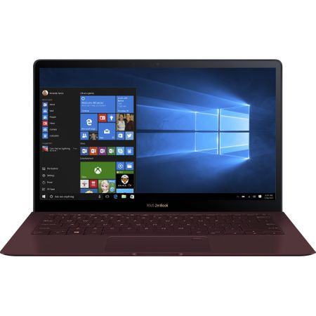

Solutii sistem expert
alienware
Descriere alienware

- tableta:nu
- buget:mare
- sistem_operare:windows
- dimensiune:mare
- greutate:mare
- tip_storage:sshd
- ram:mediu
- placa_video:da
| Atribut | Valoare |
| tableta | nu |
| buget | mare |
| sistem_operare | windows |
| dimensiune | mare |
| greutate | mare |
| tip_storage | sshd |
| ram | mediu |
| placa_video | da |